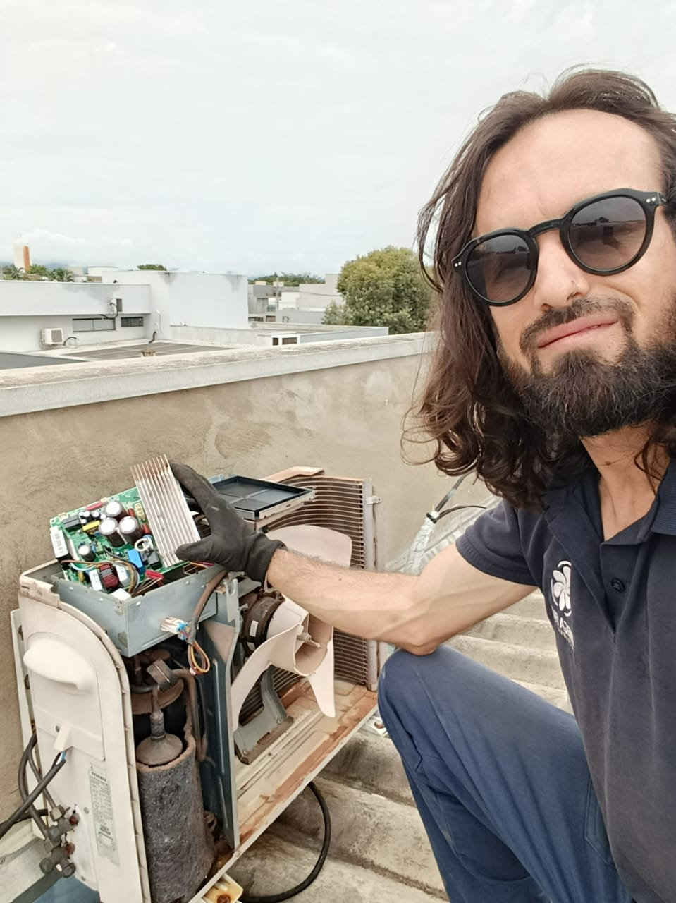
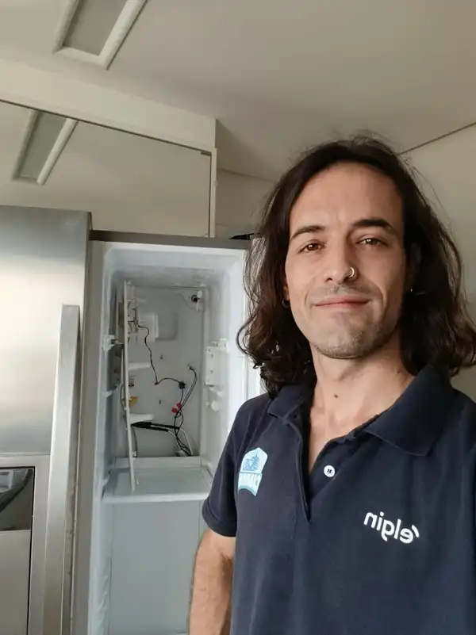
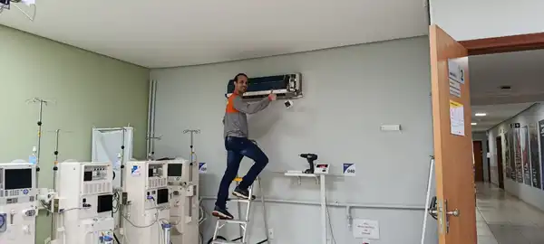

Olá, sou Gerónimo M. Campanello
Técnico em Climatização e Refrigeração
Técnico Registrado - CRT
Registro no Conselho Regional de Técnicos, garantindo responsabilidade técnica, ética profissional e conformidade com as NBRs regulamentadoras (NBR 16401, NBR 13971, entre outras).
Possuo capacitações em Elétrica e Automação Industrial, com especialização em sistemas residenciais, comerciais e industriais.
🎯 Atualmente, atuo como Técnico Responsável pela Climatização na Davita Palmas, uma das principais clínicas de hemodiálise da região. Sou responsável pela manutenção e operação de mais de 36 equipamentos de climatização, garantindo o conforto térmico e a qualidade do ar essenciais para a segurança dos pacientes e equipe médica.
Com compromisso técnico e ética profissional, ofereço soluções personalizadas que aliam eficiência energética, conforto térmico e conformidade com as normas vigentes.

Conselho Regional de Técnicos - CRT
Gerónimo M. Campanello
Registro ativo e regularizado, garantindo:
- ✓ Responsabilidade técnica comprovada
- ✓ Conformidade com as NBRs regulamentadoras
- ✓ Ética profissional e segurança nos serviços
- ✓ Qualificação reconhecida pelo conselho
Nossos Serviços Especializados
Climatização
Soluções completas para ambientes residenciais, comerciais e industriais:
- Instalação e manutenção preventiva/corretiva de ar condicionados de todos os tipos (split, cassete, piso teto, janela, central).
- Elaboração e execução de PMOC (Plano de Manutenção, Operação e Controle) e laudos técnicos para adequação legal de empresas e condomínios.
- Cálculo preciso de carga térmica para dimensionamento ideal do sistema.
- Diagnóstico e otimização de sistemas existentes para melhor desempenho e economia de energia.

Refrigeração
Atendimento especializado para o setor de refrigeração:
- Manutenção e reparo em câmaras frias, freezers, refrigeradores comerciais e industriais.
- Automação e controle de sistemas frigoríficos.
- Diagnóstico de eficiência energética em sistemas de refrigeração.

Por que escolher a Dr. Eletron?
📋 Profissional CRT
Registro no Conselho Regional de Técnicos, atestando capacitação e ética.
⚡ Formação Especializada
Capacitação em Elétrica, Automação Industrial e Especialização em Refrigeração.
🏥 Experiência em Saúde
Técnico responsável pela climatização da Davita Palmas, cuidando de 36+ equipamentos em ambiente hospitalar de alta exigência.
📱 Atendimento Personalizado
Soluções sob medida para sua necessidade, residencial ou empresarial.
🔧 Suporte Técnico
Atendimento ágil e suporte contínuo para garantir o funcionamento dos seus equipamentos.
Cases de Sucesso
Desafio: Garantir o funcionamento ininterrupto de mais de 36 equipamentos de climatização em um ambiente crítico de saúde, onde o controle de temperatura e qualidade do ar são fundamentais para o bem-estar e segurança dos pacientes.
Solução: Implantação de manutenção preventiva rigorosa, monitoramento contínuo dos sistemas e atendimento técnico especializado, garantindo a conformidade com os mais altos padrões exigidos para estabelecimentos de saúde.
Resultado: Ambiente estável e confiável, com zero intercorrências relacionadas à climatização, permitindo que a equipe médica foque no que realmente importa: o cuidado com os pacientes.
Conheça mais sobre a Davita Palmas

Técnico Gerónimo atuando na Davita Palmas
Pronto para garantir o máximo em conforto e eficiência?
Entre em contato e solicite um orçamento sem compromisso. Atendimento rápido e especializado!
Fale com um especialista.png) Fale conosco!
Fale conosco!